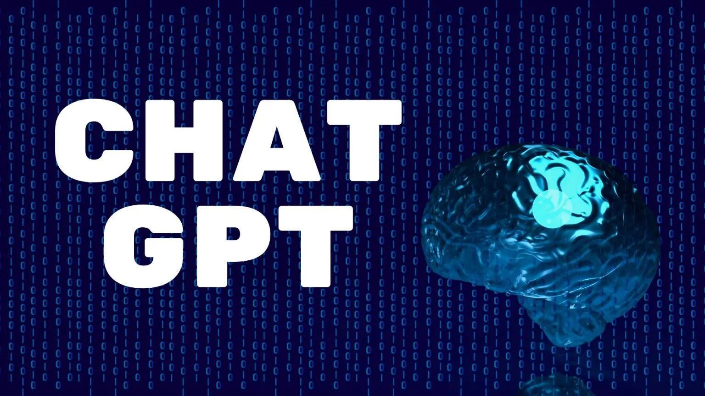

ChatGPT o que é ? e qual a finalidade.
O ChatGPT é um modelo de linguagem criado pela OpenAI que utiliza a arquitetura GPT
(Generative Pre-trained Transformer) para produzir respostas inteligentes e naturalmente
escritas em linguagem humana.
Essa tecnologia é considerada uma das mais avançadas em termos de processamento de linguagem natural,
uma vez que é capaz de aprender com grandes volumes de dados não estruturados da internet.
O ChatGPT utiliza uma rede neural profunda que foi treinada em vários conjuntos de dados de texto,
incluindo notícias, livros, artigos da Wikipédia e muito mais. O treinamento ocorreu de forma prévia,
o que permite que o modelo tenha um conhecimento amplo e variado sobre a linguagem.
A finalidade do ChatGPT é facilitar a interação entre humanos e computadores por meio de conversas naturais e fluidas.
Ele pode ser utilizado em diversos contextos, como atendimento ao cliente,
suporte técnico, assistentes virtuais e até mesmo em jogos.
O ChatGPT é capaz de interpretar e responder perguntas, realizar tarefas simples,
fornecer informações e até mesmo aprender com o usuário.
Uma das grandes vantagens do ChatGPT é a sua capacidade de se adaptar a diferentes domínios de conhecimento e contextos.
O modelo pode ser ajustado e treinado com dados específicos para atender às necessidades de um determinado nicho ou empresa.
Isso permite que a experiência do usuário seja personalizada e que as respostas
fornecidas pelo modelo sejam mais precisas e relevantes.

Outra vantagem do ChatGPT é a sua escalabilidade. Como ele foi treinado em grandes volumes de dados,
o modelo é capaz de processar grandes quantidades de informações de maneira eficiente.
Isso significa que ele pode ser usado em ambientes de alta demanda sem comprometer a qualidade da experiência do usuário.
Em resumo, o ChatGPT é uma tecnologia inovadora que tem o potencial de revolucionar a forma como os humanos
interagem com os computadores. Com sua capacidade de aprender, adaptar-se e escalar,
ele é capaz de fornecer experiências personalizadas e de alta qualidade em uma ampla gama de contextos.